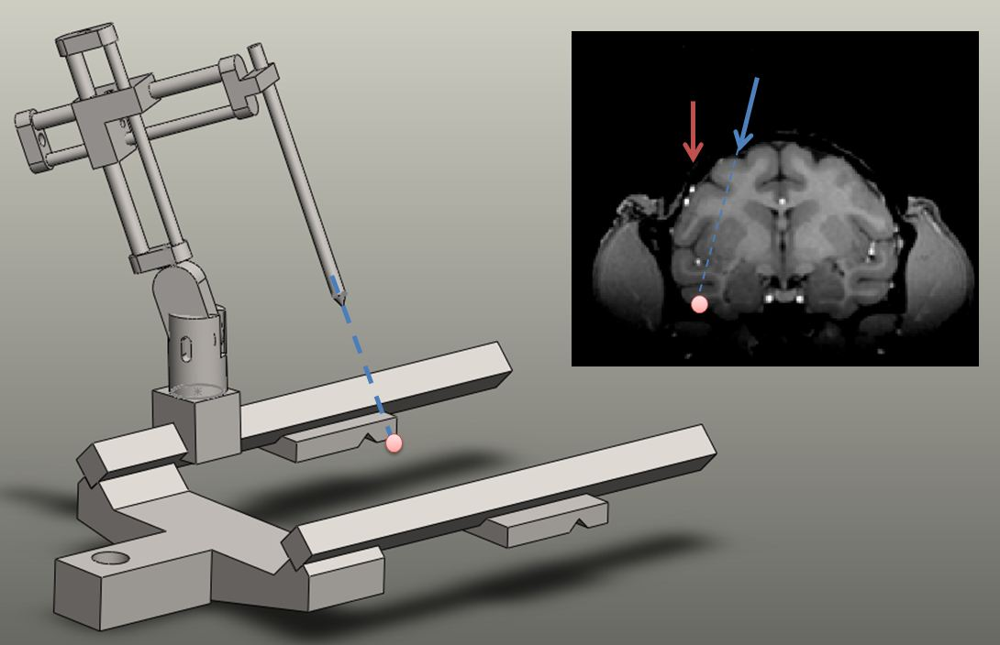

==============
--
Tsao Lab --
==============
+---------------+--------+--------------+----------+-----------+----------+---------+
|
Lab Positions |
People |
Publications |
Research |
Resources |
Teaching |
Contact |
+---------------+--------+--------------+----------+-----------+----------+---------+
Planner
About Planner
Planner is a software that assists in MR-guided electrophysiology. It was designed by Shay Ohayon, a grad student in the Tsao lab. The software enables easy visualization of the target site and allows the user to place virtual chambers, grids, and electrodes with different designs. It can also find optimal trajectories by finding the optimal grid hole, rotation and tilt angle. The other key feature of this software is its ability to automatically solve the registration problem between MR space and stereotactic space. It can report the stereotactic parameters needed to place the manipulator's tip and align it with the planned chamber position in any desierable direction:

Recently, we added a new feature that allows to design custom grids with each grid hole going in arbitrary direction. Such grids can be automatically exported as a Solidworks model and printed on a high end 3D printer (Projet).
Publication:
Download instructions:
This software is available for research purposes only. Please send your download request to
shayo@mit.edu. Make sure the email address you use to send this request is a university affilated email address.
System Requirements
Operating System: Windows XP/Vista (32 or 64 bit), Linux (64 bit only), Mac (64 bit only)
Matlab: Should be compatible with R2009b and later verions
Solidworks: If you are planning to print custom grids using the grid export function, make sure you are running with Windows 64 bit. Solidworks 2011, 2012 and 2013 are supported.
Memory: Although you can probably run planner with as little as 1G of RAM, it is usually preferred to have at least 4G. The more volumes you load, the more memory will be required.
Screen Resolution: At least 800 vertical pixels. If you are running on a windows laptop with 1200x800 (or similar), move the taskbar location to the left.
CPU: No real requirement here, but you probably want Core 2 Duo or stronger
Graphic card: If you plan to visualize surfaces, a good graphics card is required (nVidia Geforce/Quadro)
Installation instructions:
(1) Unpack the compressed file somewhere.
(2) for Window users
(a) Add a system environment variable (Start->Control Panel->System->Edit the system environment variables):
Name: MATLAB64BIN
Value: C:\MATLAB\R2009b_x64\bin\win64\MATLAB.exe (modify this to where you installed matlab)
(b) use Runme_x64.bat to run planner
(c) If you are using 32 bin version, add this variable:
Name: MATLAB32BIN
Value: C:\MATLAB\R2009b_x32\bin\win64\MATLAB.exe (modify this to where you installed the 32-bit version of matlab)
(d) use Runme.bat to run planner
(2) for Linux/Mac users:
use runme.csh to run planner (assuming matlab is already in the path)
Instruction Manual and Videos: [Under Construnction]
Quick tour of Planner (demonstration how to place virtual chamber, grid and to solve the registration problem)
Basic usage of planner: video tutorial
Calibration of planner with stereotactic models: powerpoint presentation
Citing Planner:
Please cite this article as:
Ohayon S, Tsao DY, MR-Guided Stereotactic Navigation,
J Neurosci Methods. 2012 Mar 15;204(2):389-97. Epub 2011 Dec 13